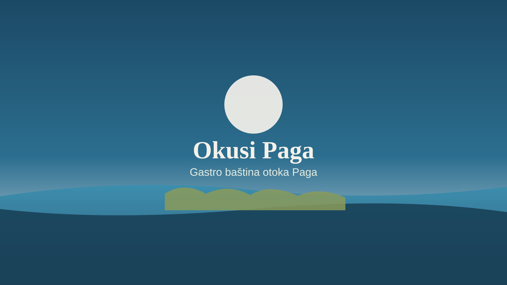
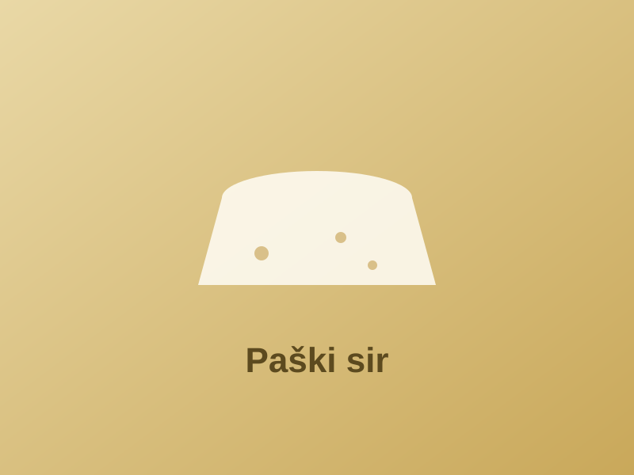
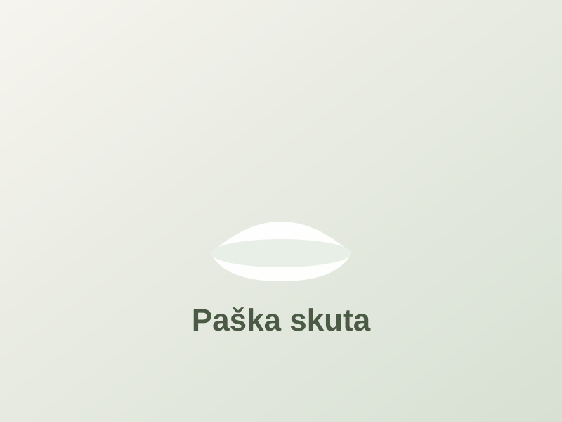
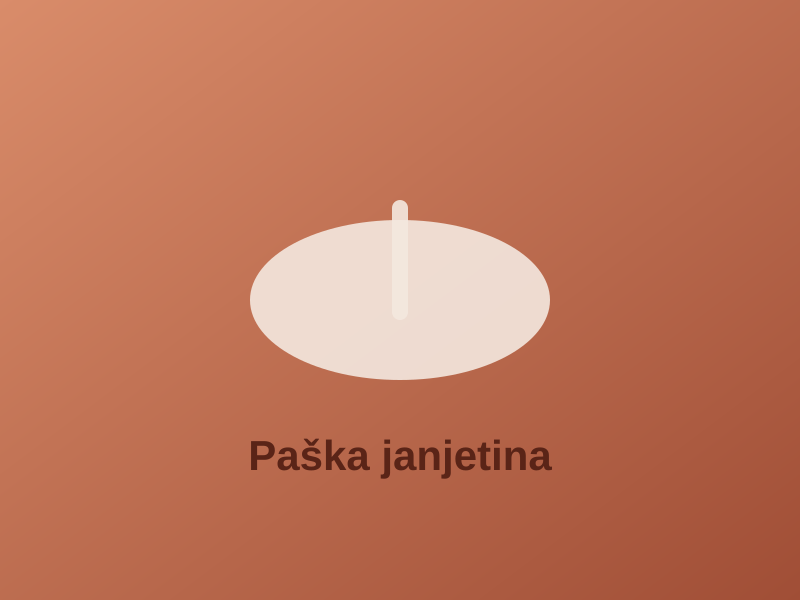
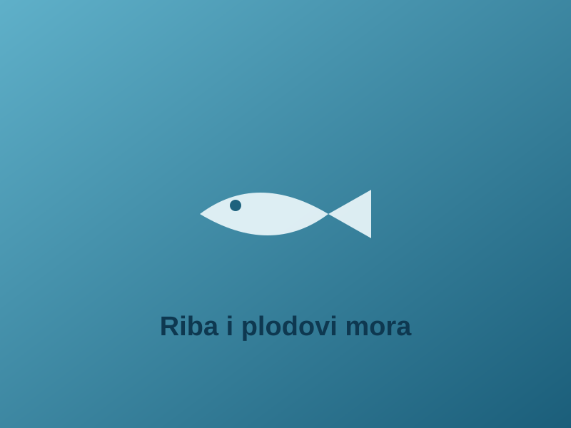
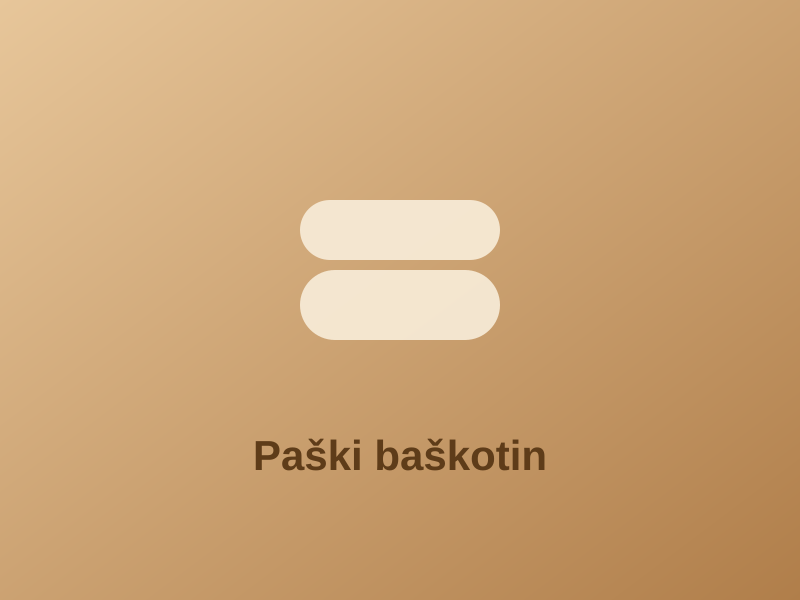
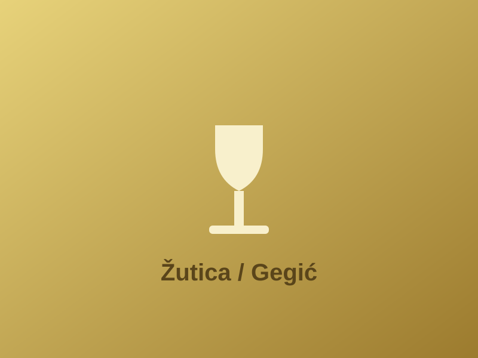

Tradicionalni okusi otoka Paga na jednom mjestu
Pregled poznatih paških proizvoda i jela — od paškog sira i janjetine do baškotina i vina sorte žutica — s provjerljivim činjenicama o svakom.
Pošalji upitProizvodi i jela
Filtriraj po kategoriji ili pretraži po nazivu i sastojcima.
Nema rezultata za zadane uvjete. Pokušaj s drugim pojmom ili kategorijom.
-

Sir i mliječnoPaški sir
Tvrdi ovčji sir s otoka Paga. Nosi oznaku zaštićene oznake izvornosti (ZOI). Specifičnu aromu povezuje se s ispašom ovaca na kamenjaru izloženom soli i samoniklom bilju poput kadulje.
- Vrsta: tvrdi sir od ovčjeg mlijeka
- Status: zaštićena oznaka izvornosti (ZOI)
- Karakteristika: utjecaj ispaše i morske soli na okus
-

Sir i mliječnoPaška skuta
Svježi mliječni proizvod koji se dobiva od sirutke preostale pri proizvodnji sira. Blagog je okusa i meke teksture te se koristi u slatkim i slanim jelima.
- Vrsta: svježi mliječni proizvod od sirutke
- Tekstura: meka, maziva
- Upotreba: namazi, kolači, slana jela
-

Meso i ribaPaška janjetina
Meso janjadi uzgojene na otoku Pagu. Nosi oznaku zaštite na razini Europske unije. Okus se povezuje s prehranom janjadi na otočnoj ispaši.
- Vrsta: meso janjadi s otoka Paga
- Status: zaštićena oznaka (EU razina)
- Karakteristika: vezano uz otočnu ispašu
-

Meso i ribaRiba i plodovi mora
Lokalna kuhinja oslanja se na ribu i plodove mora iz okolnih voda. Pripremaju se na jednostavne načine, najčešće s maslinovim uljem i lokalnim začinskim biljem.
- Izvor: ulov iz okolnih jadranskih voda
- Priprema: jednostavna, s maslinovim uljem
- Dio: svakodnevne i svečane kuhinje
-

Slatko i pićePaški baškotin
Tradicijski dvopek čiju pripremu u Pagu njeguju benediktinke. Suho je pecivo dužeg roka trajanja koje se tradicionalno poslužuje uz kavu ili vino.
- Vrsta: tradicijski dvopek (suho pecivo)
- Baština: izrada u benediktinskom samostanu u Pagu
- Posluživanje: uz kavu ili vino
-

Slatko i pićeŽutica (Gegić)
Žutica, poznata i kao gegić, autohtona je sorta grožđa otoka Paga od koje se proizvodi bijelo vino. Vinogradi se nalaze na otočnom kamenjaru izloženom utjecaju mora.
- Vrsta: autohtona sorta grožđa (bijelo vino)
- Naziv: žutica, lokalno gegić
- Uzgoj: otočni kamenjar uz utjecaj mora
Pošalji upit
Imaš pitanje o paškim proizvodima ili prijedlog za nadopunu vodiča? Pošalji poruku putem obrasca.
Izvori i zasluge
Slike na ovoj stranici izvorne su, ilustrativne SVG grafike izrađene za projekt (nisu fotografije stvarnih proizvoda). Činjenice o proizvodima temelje se na izvorima navedenima u dokumentu research-brief.md.
- Vizualni materijali: izvorni SVG placeholderi (autorski rad, ilustrativni prikaz).
- Sadržajne činjenice: Wikipedia, Turistička zajednica Grada Paga, Ministarstvo poljoprivrede (registar oznaka ZOI/ZOZP). Pune reference i procjena pouzdanosti nalaze se u
research-brief.md. - Baština: Paška čipka uvrštena je na UNESCO-ov reprezentativni popis nematerijalne kulturne baštine čovječanstva (2009.).
Napomena: URL-ove izvora treba ponovno provjeriti prije objave jer se sadržaj na webu mijenja.